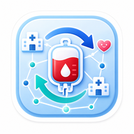

ระบบกำลังตรวจสอบการเชื่อมต่อและสถานะบัญชี
ใช้สำหรับประกาศว่ามีเลือดพร้อมให้ติดต่อ หรือกำลังต้องการเลือดระหว่างโรงพยาบาล โดยไม่เก็บข้อมูลผู้ป่วย ผู้บริจาค หรือเลขถุงเลือด
BENT ไม่ใช่ระบบจองเลือด และไม่ใช้แทนการตรวจสอบผลิตภัณฑ์ เอกสาร การขนส่ง หรือ SOP ของโรงพยาบาล
กำลังตรวจสอบลิงก์...
ผู้ดูแลระบบจะตรวจสอบโรงพยาบาลและข้อมูลผู้สมัครก่อนเปิดใช้งาน
บัญชีเดิมที่ยังรออนุมัติให้ติดต่อผู้ดูแลระบบ ส่วนผู้สมัครใหม่จะได้รับอีเมลตั้งรหัสผ่านหลังอนุมัติ
Blood Exchange Network Thailand